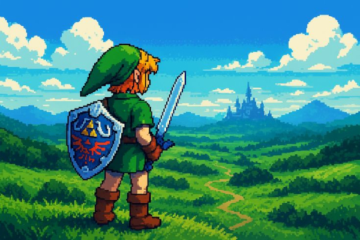

Link é o herói da série The Legend of Zelda, criada pela Nintendo. Ao longo das diferentes gerações da franquia, vários heróis chamados Link surgem para proteger o reino de Hyrule contra forças malignas.
Sua principal missão normalmente envolve salvar a Princesa Zelda e impedir que Ganon ou Ganondorf conquistem a Triforce, um poderoso artefato capaz de conceder grandes poderes.
Mesmo sendo um guerreiro habilidoso, Link demonstra humildade, coragem e forte senso de justiça, tornando-se um dos personagens mais admirados da história dos videogames.
Link domina diferentes estilos de combate utilizando espadas de diversos tipos.
Sua habilidade com o arco permite derrotar inimigos a grandes distâncias.
Em diversas histórias, Link recebe proteção e coragem através da Triforce.
Consegue subir montanhas, muralhas e diversos obstáculos naturais.
É um excelente cavaleiro, conduzindo seu fiel cavalo Epona por Hyrule.
Resolve quebra-cabeças complexos presentes nos templos e masmorras.
Enfrenta longas jornadas e batalhas extremamente difíceis.
Em vários jogos utiliza habilidades mágicas obtidas através de itens especiais.
Executa rolamentos, esquivas e ataques rápidos durante os combates.
Mesmo enfrentando monstros gigantes e criaturas lendárias, jamais abandona sua missão.
A lendária Espada Mestra é sua principal arma contra o mal.
Um escudo extremamente resistente capaz de bloquear ataques físicos e mágicos.
Permite ataques precisos a longa distância.
Utilizadas para destruir obstáculos e derrotar inimigos.
Serve tanto para combate quanto para resolver quebra-cabeças.
Permite alcançar locais distantes e atravessar grandes obstáculos.
Instrumento mágico utilizado para controlar o tempo e viajar entre diferentes locais em alguns jogos.
Seu traje tradicional oferece mobilidade durante as aventuras.
Em diferentes jogos, aumentam velocidade ou permitem caminhar sobre determinados terrenos.
Seu cavalo de confiança, utilizado para viagens rápidas por Hyrule.
O personagem Link quase nunca fala durante os jogos. Essa decisão foi tomada para facilitar que o jogador se imaginasse vivendo a aventura no lugar do herói.
A combinação entre sua coragem, habilidade com a espada, inteligência e senso de dever transforma Link em um dos maiores heróis da história dos videogames. Enfrentando inúmeros perigos para proteger o reino de Hyrule e impedir que o mal domine a Triforce, ele representa valores como bravura, perseverança e esperança, consolidando-se como um dos personagens mais marcantes da franquia The Legend of Zelda.